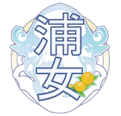

Aqours

O grupo Aqours é um grupo criado no colégio Uranohoshi, localizada na Prefeitura de Shizuoka, na cidade de Numazu.
Membras:
Takami Chika (Líder/Fundadora・Letrista)

- Aniversário: 1 de agosto
- Altura: 1,57
- Comida favorita: Mikan
- Comida que não gosta: Café, Shiokara
- Charme: Suas três tranças próximas às orelhas, seu sorriso brilhante e sua autoconfiança
Chika é uma aluna do segundo ano da Uranohoshi que lançou a Aqours. Ela é a mais nova de três irmãs e vem de uma família com um ryokan conhecido por suas fontes termais ao ar livre e com vista para o mar. Ela é vizinha da ex-aluna do primeiro ano de Otonokizaka, Sakurauchi Riko, e é amiga de infância de Matsuura Kanan e Watanabe You.
As irmãs mais velhas de Chika são Shima e Mito. De acordo com o material da revista, suas irmãs também são fãs de μ's, embora isso não pareça ter sido mantido na adaptação do anime. Elas também têm um cachorro grande chamado Shiitake.
No primeiro episódio, em uma viagem a Tokyo com You, as duas aprenderam sobre idols escolares e o torneio Love Live! depois de ver uma tela com idols escolares no Akiba Dome, incluindo µ's. Ela fica fascinada com a ideia de idols escolares, então ela decide começar, com You, um clube de ídolos escolares próprio em sua escola.
A dubladora japonesa chama-se Inami Anju (伊波杏樹).
Watanabe You (Supervisora de roupas)

- Aniversário: 17 de abril
- Altura: 1,57
- Comida favorita: Bife de Salisbury, Mikan
- Comida que não gosta: Sashimi, qualquer coisa muito seca
- Charme: Seu espírito energético e sua personalidade extrovertida
Ela é uma segundanista e colega de classe de Takami Chika, que é sua amiga de infância junto com Matsuura Kanan. Seu pai comanda uma balsa e ela gostaria de ter o emprego dele algum dia. Seu bordão é "Yousoro!" (ヨーソロー！/lit. Aye Aye! ), no qual ela saúda como um marinheiro. Isso geralmente é acompanhado pela frase "Zensoku zenshin!" (全速前進！/Velocidade máxima!). Ela também tem uma prima chamado Watanabe Tsuki, que morava na Itália.
No primeiro episódio, em uma viagem a Tokyo com Chika, as duas aprenderam sobre idols escolares e o torneio Love Live! depois de ver uma tela com idols escolares no Akiba Dome, incluindo µ's. Depois que Chika fica fascinada com a ideia de ídolos escolares, You a segue para abrir um clube de idols escolares próprio em sua escola.
A dubladora japonesa chama-se Saitou Shuka (斉藤朱夏).
Sakurauchi Riko (Compositora)

- Aniversário: 19 de setembro
- Altura: 1,60
- Comida favorita: Sanduíche com ovos cozidos
- Comida que não gosta: Pimentão verde
- Charme: Sua personalidade calma e gentil, contrastando com seu lado tímido e introspectivo
Riko é uma aluna transferida do segundo ano da Otonokizaka, que se juntou a Uranohoshi depois de se mudar de Akihabara, Tokyo. Ela está na classe de Chika e também é vizinha dela.
Quando Riko morava em Tokyo, ela costumava tocar piano, praticando na mesma sala que a ex-aluna e membro da μ's Nishikino Maki fazia em Otonokizaka. No entanto, um incidente aconteceu em uma peça ao vivo na qual ela não conseguiu tocar piano devido ao pânico cênico, e desde então ela não conseguiu melhorar sua execução. Depois de se mudar para Uchiura, Chika descobre isso no episódio 2 da 1ª temporada e sugere que Riko se torne uma idol escolar com ela e You, na esperança de que isso inspire Riko.
A dubladora japonesa chama-se Aida Rikako (逢田梨香子).
Tsushima Yoshiko (Editora de vídeo)

- Aniversário: 13 de julho
- Altura: 1,56
- Comida favorita: Chocolate, morango
- Comida que não gosta: Mikan
- Charme: Seu alter ego demoníaco "chuunibyou"
Yoshiko é uma aluna do primeiro ano que nasceu no lado urbano da cidade de Numazu. Ela frequentou o mesmo jardim de infância que sua amiga Kunikida Hanamaru, a quem ela chama de "Zuramaru" (ずら丸). Sua mãe é professora em uma escola.
Yoshiko gosta da aparência de "diabinha" e se autoproclama "Yohane, o anjo caído" (堕...天てん使...ヨハネDatenshi Yohane), um anjo que irritou Deus e foi expulso dos céus para a Terra por ir longe demais sendo como Deus, desenvolvendo um corpo humano que é meramente um recipiente ao qual sua alma está ligada. Ela desenvolveu essa persona desde que estava no jardim de infância e a abraçou totalmente durante o ensino médio. Por causa disso, está implícito que ela não tinha muitos amigos naquela época.
Yoshiko se encontra com sua antiga amiga do jardim de infância Hanamaru, assim como Chika, You e Ruby no primeiro episódio, embora ela aja como "Yohane" durante esse tempo até que Hanamaru a leva a agir normalmente. No episódio seguinte, ela vai à aula, mas escapa imediatamente após agir como "Yohane" mais uma vez. Finalmente, no episódio 5, ela é encontrada por Hanamaru se escondendo na escola e é convidada por Chika para fazer parte do Aqours. Depois que o grupo tenta adotar seu estilo de "anjo caído", no entanto, ela deixa o grupo por causar problemas com o presidente do conselho estudantil. Ela se junta oficialmente ao grupo no mesmo episódio depois que eles lhe asseguram que estavam bem com sua persona de "anjo caído".
A dubladora japonesa chama-se Kobayashi Aika (小林愛香).
Kunikida Hanamaru (Nada)

- Aniversário: 4 de março
- Altura: 1,52
- Comida favorita: Pasta de feijão vermelho, Mikan
- Comida que não gosta: Leite, macarrão
- Charme: Seu jeito tranquilo e simples, combinado com sua personalidade gentil e adorável
Hanamaru, conhecida como "Maru" para abreviar (por ela e seus amigos), é uma aluna do primeiro ano e filha de uma família que administra um templo próximo há gerações. Ela mora com os avós e, como não tem computador, costuma ler muito. Hanamaru é a melhor amiga de Ruby e ambas são frequentemente vistas próximas uma da outra. Ela também frequentou o mesmo jardim de infância que Yoshiko, também uma de suas amigas.
Hanamaru tem um tique verbal e dialeto característicos, tendendo a terminar suas frases com "zura" (ずら), além de usar "ora" como pronome de primeira pessoa para se referir a si mesma.
No anime, no primeiro episódio, Hanamaru e Ruby são rapidamente abordadas por Chika, que as convida para serem idols escolares. Confusa, Hanamaru rapidamente descarta o convite. Mais tarde, é revelado no episódio 4 da 1ª temporada que Hanamaru realmente estava interessada em idols escolares, especialmente depois de ver uma foto de Hoshizora Rin das µ's, mas não conseguiu se tornar uma idol escolar por causa de sua aparência e falta de condição física. Ela convence a irmã de Ruby, Dia, a prestar atenção no que sua irmã realmente quer, que era ser uma idol escolar. Depois que Ruby se junta a Aqours, ela conta a Hanamaru sobre a história de Rin e µ's, e Hanamaru finalmente decide se juntar a Aqours, apoiando Ruby em seu esforço.
A dubladora japonesa chama-se Takatsuki Kanoko (高槻かなこ).
Kurosawa Ruby (Designer de roupas)

- Aniversário: 21 de setembro
- Altura: 1,54
- Comida favorita: Batata frita, batata doce
- Comida que não gosta: Wasabi
- Charme: Sua personalidade doce, tímida e inocente
Ruby é uma aluna do primeiro ano que é a irmã mais nova de Dia Kurosawa, com quem ela compartilha um forte vínculo. Ela é de uma antiga família envolvida na gestão de pesca cujo nome é bem conhecido na área. A família Kurosawa também possui uma série de empresas, incluindo imóveis, entretenimento, recursos humanos e gestão de restaurantes. Ruby está quase sempre perto de sua melhor amiga, Hanamaru.
No anime, no primeiro episódio, Ruby é mostrada demonstrando um grande interesse em idols escolares. Na Temporada 1 Episódio 4 mostra que ela costumava ser fã de idols escolares, compartilhando esse hobby com Dia, embora algo tenha feito sua irmã mais velha aparentemente perder esse interesse, o que é revelado nos Episódios 6, 8 e 9 da Temporada 1 como o fracasso de Dia como idols escolar. O amor de Ruby por idols escolares permaneceu intacto, mas o evento a fez secretamente mantê-lo longe de sua irmã. Mais tarde, ela se junta a Aqours na Temporada 1 Episódio 4, depois de contar com o apoio de sua irmã.
A dubladora japonesa chama-se Furihata Ai (降幡愛).
Kurosawa Dia (Membra; Original・Coreógrafa)

- Aniversário: 1 de julho
- Altura: 1,62
- Comida favorita: Doce sabor maccha, Pudding
- Comida que não gosta: Bife Salisbury, Gratin
- Charme: Sua combinação de elegância, perfeccionismo e sua faceta inesperadamente fofa
Dia é uma aluna do terceiro ano que é presidente do conselho estudantil e é a irmã mais velha de Ruby, com quem ela compartilha um forte vínculo. Ela é de uma antiga família envolvida na gestão de pesca cujo nome é bem conhecido na área. A família Kurosawa também possui uma série de empresas, incluindo imóveis, entretenimento, recursos humanos e gestão de restaurantes. Dia é amiga de infância de Kanan e Mari.
No anime, Dia inicialmente rejeita a ideia de um clube de idols por causa da incompetência e inexperiência de Chika, castigando-a por sua falta de conhecimento sobre idols. Mais tarde, é revelado no episódio 4 da 1ª temporada que ela costumava ser fã de idols escolares, compartilhando esse hobby com sua irmã Ruby, embora algo a tenha feito perder esse interesse. Isso é explicado nos episódios 6, 8 e 9 da 1ª temporada, pois ela fazia parte de um grupo de idols escolares formado por Kanan, ao lado dela e Mari. No entanto, Mari sofreu uma lesão logo antes de sua apresentação, então Kanan e Dia decidiram desistir e não se apresentar. Essa falha fez com que Dia escondesse seu interesse em idols escolares e inicialmente tentasse impedir que o clube de idols de Chika acontecesse, mas mais tarde ela se junta ao grupo de Chika no episódio 9 após Mari e Kanan se reconciliarem.
A dubladora japonesa chama-se Komiya Arisa (小宮有紗).
Matsuura Kanan (Líder; Original・Coreógrafa)

- Aniversário: 10 de fevereiro
- Altura: 1,62
- Comida favorita: Sazae, Wakame
- Comida que não gosta: Umeboshi
- Charme: Sua personalidade calma, madura e confiável
Kanan é uma estudante do terceiro ano que vive na ilha offshore de Awashima com seu avô, que administra uma loja de mergulho lá. No anime, ela teve dificuldade em frequentar as aulas, pois deve cuidar da loja enquanto seu pai se recupera de um osso fraturado. Ela consegue frequentar as aulas a partir do episódio 9 da 1ª temporada. Kanan é amiga de infância de Chika, You, Dia e Mari.
Nos episódios 6, 8 e 9 da 1ª temporada, é revelado que Kanan havia formado um grupo de idols escolares com Mari e Dia há dois anos, tendo convencido a primeira a se juntar. No entanto, Mari sofreu uma lesão logo antes da apresentação, então ela e Dia decidiram desistir e não se apresentar. Depois que Mari viaja para estudar no exterior, ela se torna mais distante de seus colegas. É até Mari descobrir a verdade que Kanan se reconcilia com sua velha amiga e decide se tornar um ídolo da escola mais uma vez.
A dubladora japonesa chama-se Suwa Nanaka (諏訪ななか).
Ohara Mari (Membra; Original)

- Aniversário: 13 de junho
- Altura: 1,63
- Comida favorita: Café, limões
- Comida que não gosta: Natto, Kimchi
- Charme: Sua personalidade extrovertida, carismática e um tanto excêntrica
Mari é uma estudante do terceiro ano cujos pais (sua mãe e seu pai ítalo-americano) administram uma rede de hotéis, Ohara Hotels and Resorts, incluindo o Hotel Ohara na Ilha Awashima (baseado no atual Awashima Hotel, atualmente Wyndham Grand Awashima), onde Mari mora em uma suíte, o que prova sua criação em uma família muito rica. Ela é amiga de infância de Kanan e Dia, conhecendo-as desde o ensino fundamental.
Devido à sua educação parcialmente ítalo-americana, Mari fala com sotaque e frequentemente insere palavras em inglês em seu discurso a cada poucas linhas (na dublagem em inglês, as palavras em inglês são substituídas por palavras em italiano). Ela também tende a falar na terceira pessoa.
Ela é vista pela primeira vez no primeiro episódio voando no helicóptero da família, antes de aparecer formalmente no Episódio 3, onde se torna a diretora da Uranohoshi (apesar de ainda ser uma estudante) depois que sua família contribuiu com uma grande quantia de dinheiro para a escola. Os episódios 6, 8 e 9 da 1ª temporada revelam que ela, Kanan e Dia formaram um grupo idols escolares há dois anos, enquanto estavam no primeiro ano, Kanan convenceu Mari a se juntar. No entanto, Mari sofreu uma lesão logo antes de uma apresentação importante, então Kanan e Dia decidiram renunciar e não se apresentar. Mais tarde, Mari deixa Uchiura para estudar no exterior depois que os três dissolvem seu grupo idols escolares. Assim que Mari descobre a verdade no Episódio 9, ela confronta Kanan sobre isso, mas ambos se reconciliam e decidem se tornar idols escolares mais uma vez, juntando-se a Aqours ao lado de Dia.
A dubladora japonesa chama-se Suzuki Aina (鈴木愛奈).
Confira algumas músicas delas~
Clique na imagem

Se quiser voltar à página inicial, clica ali, ó → Voltar